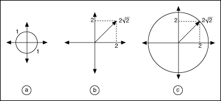

You must develop a notion of the magnitude of vectors and matrices to measure errors and sensitivity in solving a linear system of equations. As an example, these linear systems can be obtained from applications in control systems and computational fluid dynamics. In two dimensions, for example, you cannot compare two vectors x = [x1 x2] and y = [y1 y2] because you might have x1 > y1 but x2 < y2. A vector norm is a way to assign a scalar quantity to these vectors so that they can be compared with each other. It is similar to the concept of magnitude, modulus, or absolute value for scalar numbers.
There are several ways to compute the norm of a vector. These include the 2-norm (Euclidean norm), the 1-norm, the Frobenius norm (F-norm), and the Infinity norm (inf-norm). Each norm has its own physical interpretation. Consider a unit ball containing the origin. The Euclidean norm of a vector is simply the factor by which the ball must be expanded or shrunk in order to encompass the given vector exactly, as shown in the following figure.

Part a of the previous figure shows a unit ball of radius = 1 unit. Part b shows a vector of length . As shown in Part c of the previous figure, the unit ball must be expanded by a factor of before it can exactly encompass the given vector. Hence, the Euclidean norm of the vector is .
The norm of a matrix is defined in terms of an underlying vector norm. It is the maximum relative stretching that the matrix does to any vector. With the vector 2-norm, the unit ball expands by a factor equal to the norm. On the other hand, with the matrix 2-norm, the unit ball might become an ellipsoidal (ellipse in 3D), with some axes longer than others. The longest axis determines the norm of the matrix.
Some matrix norms are much easier to compute than others. The 1-norm is obtained by finding the sum of the absolute value of all the elements in each column of the matrix. The largest of these sums is the 1-norm. In mathematical terms, the 1-norm is simply the maximum absolute column sum of the matrix. If the size of matrix A is m-by-n, then the following equation is true:
For example,

then
The inf-norm of a matrix is the maximum absolute row sum of the matrix.
In this case, you add the magnitudes of all elements in each row of the matrix. The maximum value that you get is the inf-norm. For the example matrix ,
The Frobenius norm of a matrix is the square root of the sum of the absolute squares of all elements, as shown in the following equation.
For the example matrix ,
For a complex matrix, the absolute value is the module of the element.
The 2-norm is the most difficult to compute because it is defined as the largest singular value of the matrix.